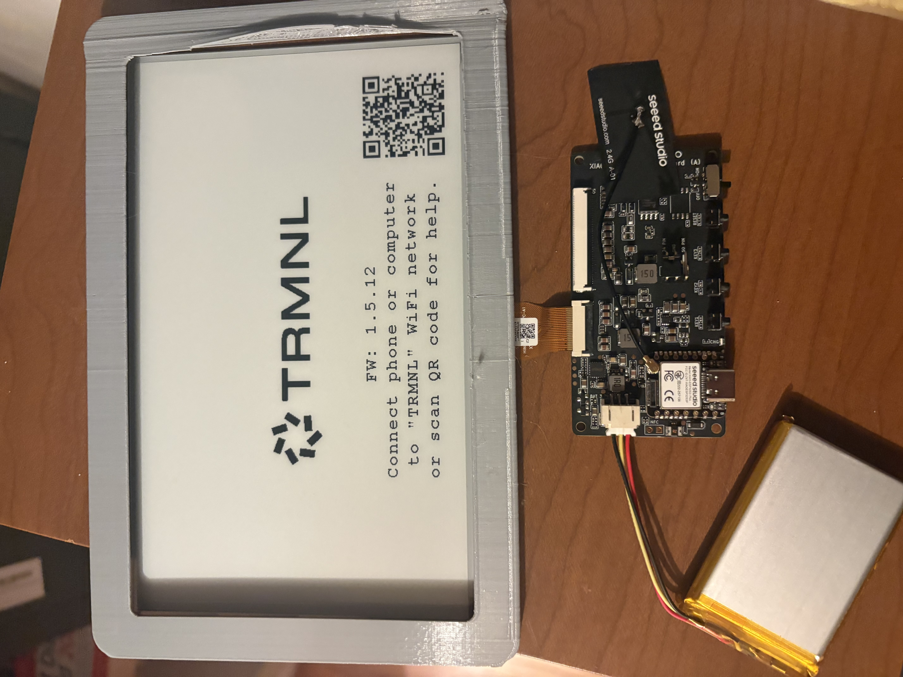

DIY E-Ink Display
2026 · ESP32-S3 · E-Ink · TRMNL · ESPHomeI built a 7.5-inch e-ink dashboard using the TRMNL 7.5" DIY Kit from Seeed Studio. The goal was a low-power, always-on display I could customize — something a commercial e-reader wouldn't let me do.

The kit
The TRMNL kit is co-developed by Seeed Studio and TRMNL. It ships as a handful of components you assemble yourself — no soldering required, just careful FPC cable handling.
| Component | Details |
|---|---|
| Display | 7.5" monochrome e-ink, 800×480 |
| Driver board | XIAO ESP32-S3 Plus (MCU + ePaper controller onboard) |
| Battery | 2000mAh rechargeable Li-ion |
| Cable | 10cm FPC extension + FPC connector |
| Enclosure | 3D printed (open-source files on Printables / Thingiverse) |
Assembly
The trickiest part is the FPC cable. It's extremely fragile and the connector only works one way — metal side facing up. Getting it wrong means no display output and potentially a damaged cable. I got it wrong once. The Seeed wiki has a step-by-step installation guide that's worth following exactly.
After the cable, it's straightforward: connect the battery JST connector (red to +, black to -), print an enclosure, and assemble. The antenna can be routed outside the case if you're far from your router.
Software
The ESP32-S3 supports three different software paths depending on what you want to do:
- TRMNL BYOD — no-code dashboard platform with 375+ plugins (Calendar, GitHub, Shopify, weather, etc.) and 8 layouts. Easiest way to get something on the screen fast.
- ESPHome + Home Assistant — full integration into a home automation setup. Flash ESPHome firmware and control the display from Home Assistant automations.
- Arduino IDE — write your own firmware from scratch. Full control over refresh logic, graphics rendering, and power management.
Will add later.
Battery life
E-ink is uniquely suited for low-power applications because it only draws power when refreshing — the image persists with no power once set. With the ESP32-S3 in deep sleep between updates, the 2000mAh battery lasts up to three months at a 6-hour refresh interval. Even at a 1-hour refresh that's weeks of runtime on a single charge.
Display specs
The panel does a partial refresh in 0.34 seconds and a full refresh in 3.5 seconds. Monochrome only — no grayscale, no color. For a dashboard showing text and simple graphics that's perfectly fine. The 800×480 resolution at 7.5 inches is sharp enough to read comfortably from across a desk.
The 3D printer detour
The kit doesn't come with an enclosure — you print one yourself from open-source files on Printables or Thingiverse. I didn't have a printer, so I picked one up off Craigslist. It needed work. The electrical connections were bad, so I resoldered them and fixed the wiring before it would print reliably. That ended up being its own small project — diagnosing what was wrong, reflowing joints, getting clean continuity.
Once it was running I printed the enclosure. The gray frame you can see in the photo is the result. It's a tight fit around the display and holds the driver board and battery behind it. The FPC cable routes through the frame to connect everything.
What I'd add
Will add later.